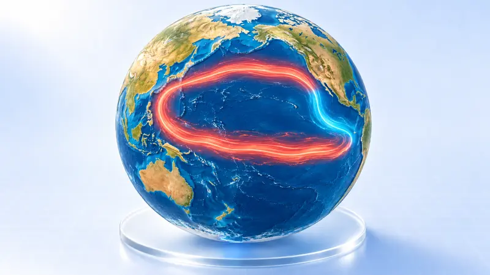
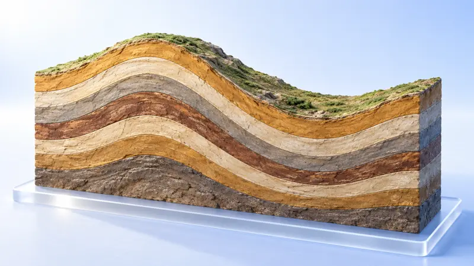
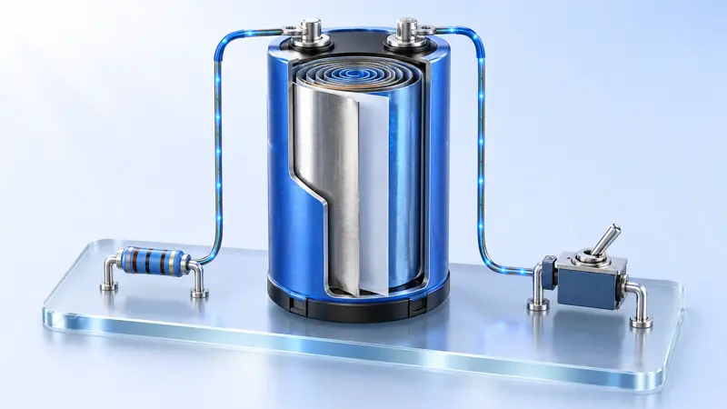
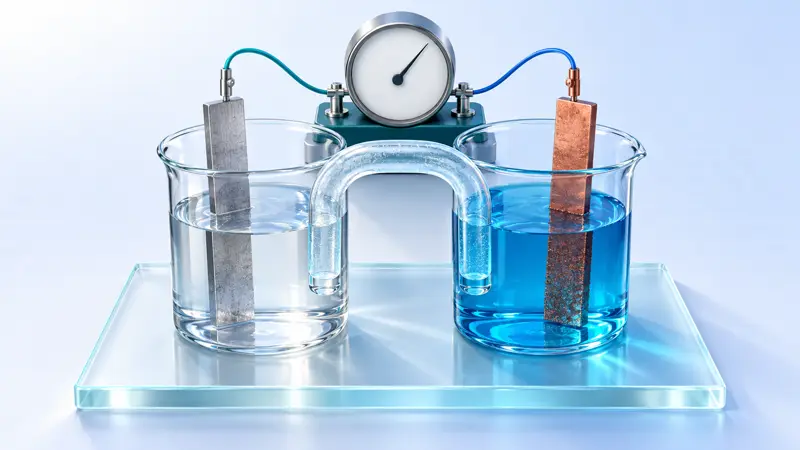
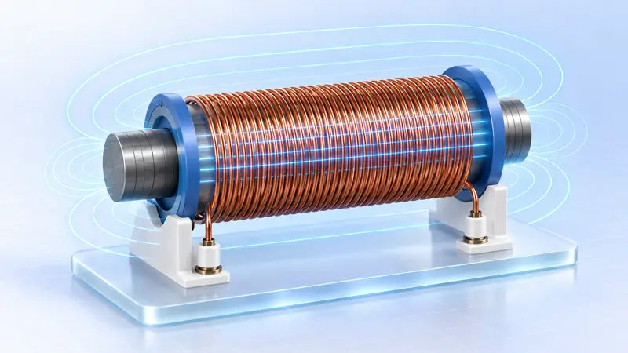
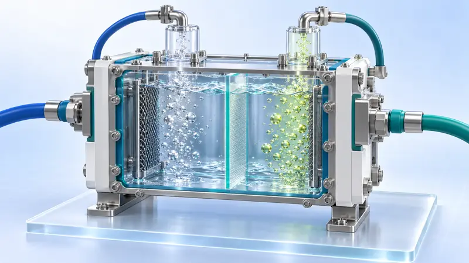

54 phòng thí nghiệm 3D
Sáu bài có nhãn và lộ trình tiếng Việt. Các bài còn lại được giữ nguyên tài nguyên 3D để tiếp tục rà soát và Việt hoá nội dung chuyên môn. Tên tiếng Trung của chúng được giữ để bạn nhận biết phần chưa biên tập.
 Hoá học · Nguồn gốc · đang biên tập合成氨工业7 bước học ↗
Hoá học · Nguồn gốc · đang biên tập合成氨工业7 bước học ↗ Địa lý · Đã biên tập tiếng ViệtDòng sông tạo nên địa hình8 bước học ↗
Địa lý · Đã biên tập tiếng ViệtDòng sông tạo nên địa hình8 bước học ↗ Hoá học · Nguồn gốc · đang biên tập化学反应速率的影响因素8 bước học ↗
Hoá học · Nguồn gốc · đang biên tập化学反应速率的影响因素8 bước học ↗ Địa lý · Nguồn gốc · đang biên tập太阳直射点的回归运动与四季、五带9 bước học ↗
Địa lý · Nguồn gốc · đang biên tập太阳直射点的回归运动与四季、五带9 bước học ↗ Hoá học · Nguồn gốc · đang biên tập搭建球棍模型认识有机化合物分子结构9 bước học ↗
Hoá học · Nguồn gốc · đang biên tập搭建球棍模型认识有机化合物分子结构9 bước học ↗ Hoá học · Nguồn gốc · đang biên tập强酸与强碱的中和滴定9 bước học ↗
Hoá học · Nguồn gốc · đang biên tập强酸与强碱的中和滴定9 bước học ↗ Hoá học · Nguồn gốc · đang biên tập氯气的制备及性质9 bước học ↗
Hoá học · Nguồn gốc · đang biên tập氯气的制备及性质9 bước học ↗ Hoá học · Nguồn gốc · đang biên tập高炉炼铁8 bước học ↗
Hoá học · Nguồn gốc · đang biên tập高炉炼铁8 bước học ↗ Hoá học · Nguồn gốc · đang biên tập金属冶炼：电解熔融盐 + 铝热8 bước học ↗
Hoá học · Nguồn gốc · đang biên tập金属冶炼：电解熔融盐 + 铝热8 bước học ↗
Địa lý · Nguồn gốc · đang biên tập世界洋流的分布规律与影响9 bước học ↗ Địa lý · Nguồn gốc · đang biên tập海—气相互作用与厄尔尼诺、拉尼娜7 bước học ↗
Địa lý · Nguồn gốc · đang biên tập海—气相互作用与厄尔尼诺、拉尼娜7 bước học ↗ Hoá học · Nguồn gốc · đang biên tập煤的综合利用：以煤的气化为主线8 bước học ↗
Hoá học · Nguồn gốc · đang biên tập煤的综合利用：以煤的气化为主线8 bước học ↗ Hoá học · Nguồn gốc · đang biên tập接触法制硫酸7 bước học ↗
Hoá học · Nguồn gốc · đang biên tập接触法制硫酸7 bước học ↗ Hoá học · Nguồn gốc · đang biên tập盐类的水解及其应用9 bước học ↗
Hoá học · Nguồn gốc · đang biên tập盐类的水解及其应用9 bước học ↗ Địa lý · Nguồn gốc · đang biên tập大气受热过程9 bước học ↗
Địa lý · Nguồn gốc · đang biên tập大气受热过程9 bước học ↗ Địa lý · Nguồn gốc · đang biên tập喀斯特地貌的形成与识别7 bước học ↗
Địa lý · Nguồn gốc · đang biên tập喀斯特地貌的形成与识别7 bước học ↗ Hoá học · Nguồn gốc · đang biên tập工业制水泥8 bước học ↗
Hoá học · Nguồn gốc · đang biên tập工业制水泥8 bước học ↗ Địa lý · Nguồn gốc · đang biên tập全球气候变化与国家安全8 bước học ↗
Địa lý · Nguồn gốc · đang biên tập全球气候变化与国家安全8 bước học ↗
Địa lý · Nguồn gốc · đang biên tập构造地貌的形成6 bước học ↗ Vật lý · Nguồn gốc · đang biên tập光电效应9 bước học ↗
Vật lý · Nguồn gốc · đang biên tập光电效应9 bước học ↗
Vật lý · Nguồn gốc · đang biên tập观察电容器的充放电9 bước học ↗Địa lý · Nguồn gốc · đang biên tập地球运动的地理意义9 bước học ↗ Vật lý · Đã biên tập tiếng ViệtGia tốc, lực và khối lượng8 bước học ↗
Vật lý · Đã biên tập tiếng ViệtGia tốc, lực và khối lượng8 bước học ↗ Hoá học · Nguồn gốc · đang biên tập铁及其化合物：铁的价态转化9 bước học ↗
Hoá học · Nguồn gốc · đang biên tập铁及其化合物：铁的价态转化9 bước học ↗ Sinh học · Nguồn gốc · đang biên tập植物细胞的吸水和失水8 bước học ↗
Sinh học · Nguồn gốc · đang biên tập植物细胞的吸水和失水8 bước học ↗ Hoá học · Nguồn gốc · đang biên tập电解原理：电解氯化铜溶液与饱和食盐水9 bước học ↗
Hoá học · Nguồn gốc · đang biên tập电解原理：电解氯化铜溶液与饱和食盐水9 bước học ↗ Hoá học · Nguồn gốc · đang biên tập氨的制备与性质（含喷泉实验）9 bước học ↗
Hoá học · Nguồn gốc · đang biên tập氨的制备与性质（含喷泉实验）9 bước học ↗ Hoá học · Nguồn gốc · đang biên tập探究影响化学平衡移动的因素9 bước học ↗
Hoá học · Nguồn gốc · đang biên tập探究影响化学平衡移动的因素9 bước học ↗ Hoá học · Nguồn gốc · đang biên tập焰色试验与原子光谱8 bước học ↗
Hoá học · Nguồn gốc · đang biên tập焰色试验与原子光谱8 bước học ↗
Hoá học · Nguồn gốc · đang biên tập原电池：单液到双液9 bước học ↗ Hoá học · Nguồn gốc · đang biên tập电解质的电离与溶液导电性、离子反应的实质9 bước học ↗
Hoá học · Nguồn gốc · đang biên tập电解质的电离与溶液导电性、离子反应的实质9 bước học ↗ Vật lý · Đã biên tập tiếng ViệtKiểm chứng định luật bảo toàn cơ năng8 bước học ↗
Vật lý · Đã biên tập tiếng ViệtKiểm chứng định luật bảo toàn cơ năng8 bước học ↗ Địa lý · Nguồn gốc · đang biên tập土壤的主要形成因素与土壤剖面观察8 bước học ↗
Địa lý · Nguồn gốc · đang biên tập土壤的主要形成因素与土壤剖面观察8 bước học ↗ Vật lý · Đã biên tập tiếng ViệtKhám phá chuyển động ném ngang9 bước học ↗
Vật lý · Đã biên tập tiếng ViệtKhám phá chuyển động ném ngang9 bước học ↗ Hoá học · Nguồn gốc · đang biên tập浓、稀硝酸的性质与氮氧化物的转化9 bước học ↗
Hoá học · Nguồn gốc · đang biên tập浓、稀硝酸的性质与氮氧化物的转化9 bước học ↗ Vật lý · Đã biên tập tiếng ViệtLực hướng tâm: khối lượng, bán kính, tốc độ góc8 bước học ↗
Vật lý · Đã biên tập tiếng ViệtLực hướng tâm: khối lượng, bán kính, tốc độ góc8 bước học ↗
Vật lý · Nguồn gốc · đang biên tập自感与涡流9 bước học ↗ Vật lý · Nguồn gốc · đang biên tập测电源电动势和内阻9 bước học ↗
Vật lý · Nguồn gốc · đang biên tập测电源电动势和内阻9 bước học ↗ Sinh học · Nguồn gốc · đang biên tập神经冲动的产生和传导9 bước học ↗
Sinh học · Nguồn gốc · đang biên tập神经冲动的产生和传导9 bước học ↗ Hoá học · Nguồn gốc · đang biên tập海水提溴：空气吹出法7 bước học ↗
Hoá học · Nguồn gốc · đang biên tập海水提溴：空气吹出法7 bước học ↗ Địa lý · Nguồn gốc · đang biên tập大气热力环流9 bước học ↗
Địa lý · Nguồn gốc · đang biên tập大气热力环流9 bước học ↗ Sinh học · Nguồn gốc · đang biên tập观察根尖分生区组织细胞的有丝分裂9 bước học ↗
Sinh học · Nguồn gốc · đang biên tập观察根尖分生区组织细胞的有丝分裂9 bước học ↗ Hoá học · Nguồn gốc · đang biên tập金属钠的性质（含钠着火扑救）9 bước học ↗
Hoá học · Nguồn gốc · đang biên tập金属钠的性质（含钠着火扑救）9 bước học ↗ Hoá học · Nguồn gốc · đang biên tập硫、二氧化硫、浓硫酸的性质与不同价态含硫物质的转化9 bước học ↗
Hoá học · Nguồn gốc · đang biên tập硫、二氧化硫、浓硫酸的性质与不同价态含硫物质的转化9 bước học ↗ Địa lý · Nguồn gốc · đang biên tập大气的水平运动——风8 bước học ↗
Địa lý · Nguồn gốc · đang biên tập大气的水平运动——风8 bước học ↗ Hoá học · Nguồn gốc · đang biên tập吸氧腐蚀与暖贴的设计9 bước học ↗
Hoá học · Nguồn gốc · đang biên tập吸氧腐蚀与暖贴的设计9 bước học ↗ Sinh học · Nguồn gốc · đang biên tập影响酶活性的条件8 bước học ↗
Sinh học · Nguồn gốc · đang biên tập影响酶活性的条件8 bước học ↗
Hoá học · Nguồn gốc · đang biên tập氯碱工业8 bước học ↗ Hoá học · Nguồn gốc · đang biên tập侯氏制碱8 bước học ↗
Hoá học · Nguồn gốc · đang biên tập侯氏制碱8 bước học ↗ Vật lý · Nguồn gốc · đang biên tập电流的磁场9 bước học ↗
Vật lý · Nguồn gốc · đang biên tập电流的磁场9 bước học ↗ Vật lý · Đã biên tập tiếng ViệtChuyển động Brown và khuếch tán9 bước học ↗
Vật lý · Đã biên tập tiếng ViệtChuyển động Brown và khuếch tán9 bước học ↗ Địa lý · Nguồn gốc · đang biên tập水循环的过程与地理意义9 bước học ↗
Địa lý · Nguồn gốc · đang biên tập水循环的过程与地理意义9 bước học ↗ Địa lý · Nguồn gốc · đang biên tập气压带、风带与三圈环流7 bước học ↗
Địa lý · Nguồn gốc · đang biên tập气压带、风带与三圈环流7 bước học ↗